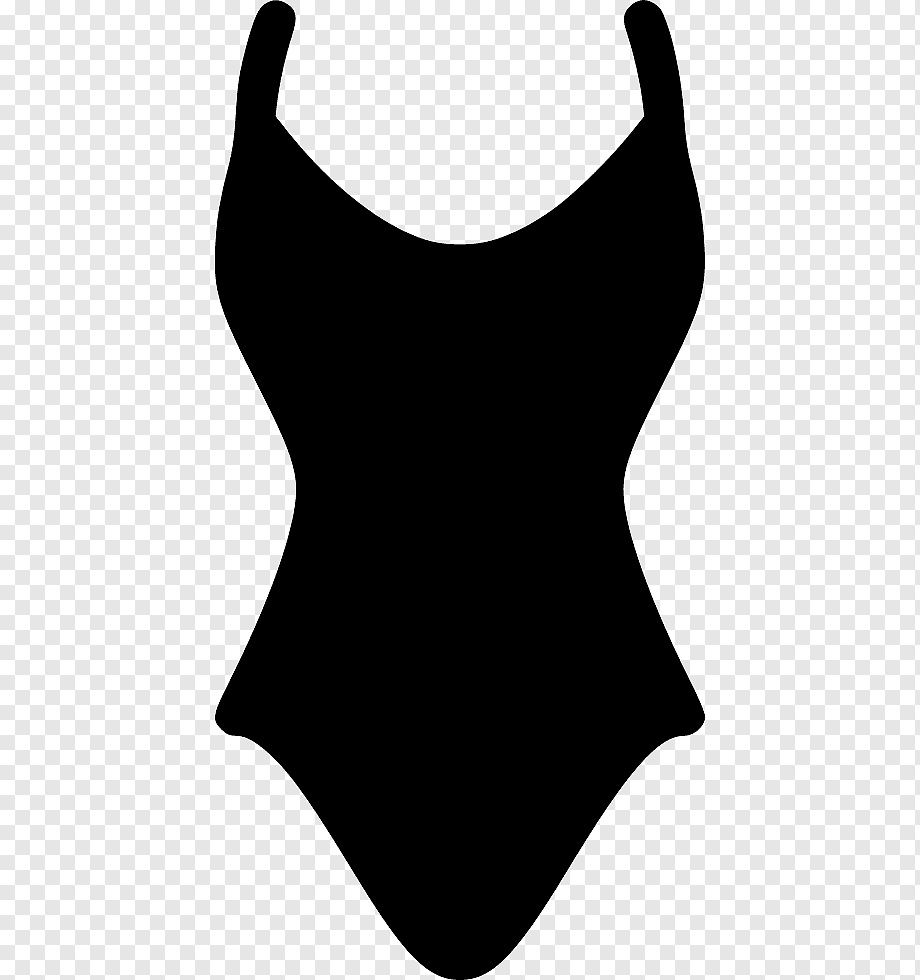

영상의 발달로 인해 인쇄는 곧 사라질 것처럼 생각했지만 예상을 뒤집고 인쇄물들은 점점 고급화를 향해 달리고 있다. e-book의 출현과 함께 서점에서 책을 사모으는 취미는 여전하고 FACEBOOK의 도전에도 불구하고 많은 사람들은 책장을 손으로 넘기고 있다. 좋은 인쇄물을 갖는 것은 큰 즐거움이며 스마트폰을 두드리는 손가락에 의해 흥미로운 책장도 계속 넘어간다.